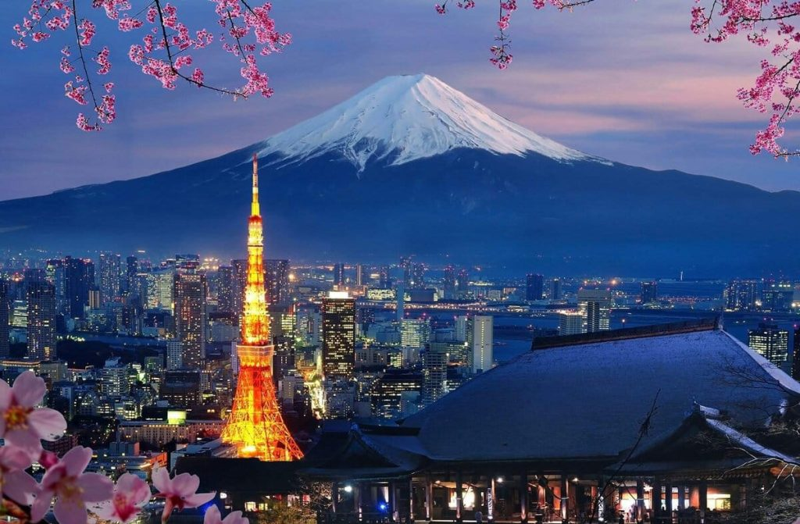

Про місто

Коротка характеристика: Столиця Японії, мегаполіс, який поєднує ультрасучасні технології та вікові традиції.
Чому я обрав це місто: Токіо вражає своїми масштабами, неймовірною чистотою, швидкістю життя та гармонією між хмарочосами й тихими храмами.
Цікаві факти:
- Токіо вважається найбезпечнішим мегаполісом світу з таким великим населенням.
- У місті розташовано понад сотню музеїв та тисячі ресторанів зі світовими відзнаками.